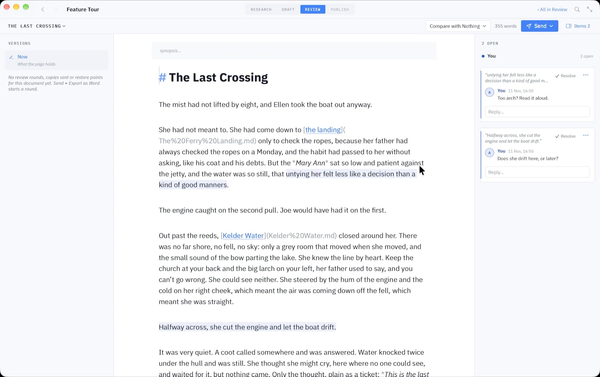

Tracked changes from Word, back into your Markdown
You write in Markdown. Your editor, co-author or supervisor works in Word, and sends back a file full of tracked changes and comments. Grasmere reads that file and shows each change beside your own text, to accept or reject one at a time. The Markdown stays Markdown throughout.
The problem
Plain text and tracked changes don’t mix. Word’s review tools work on Word files. The usual answer for Markdown writers is Pandoc, which can convert a returned .docx with every change accepted, or every change rejected, or all of them left in as CriticMarkup to sort through by hand. None of that is reviewing. You want to see what was changed, decide about each one, and keep the file you were writing in.
How the round trip works

- Send a Word file. Open the document’s Review screen (⇧⌘R) and choose Send ▸ Export as Word. Grasmere writes a
.docxwith proper headings, footnotes and, if the document cites sources, the citations and reference list in your chosen style. The file is named for the round, “Chapter 3 (Round 1).docx”, and Grasmere remembers what it sent. - They review it in Word. Or in Pages, LibreOffice, or Google Docs with Suggesting on. Tracked changes, comments and replies all come back. So do changes made without Track Changes switched on, because Grasmere compares the text itself.
- Bring it back. Drop the returned file on the Review screen, or click Import Returned File. Grasmere matches each paragraph to your Markdown, even if you kept writing in the meantime.
- Decide. Each change appears on the page in the reviewer’s colour, a deleted word struck through and an added one underlined after it. A comment washes its passage and sits beside the page as a balloon. Click a change for Accept, Reject or Defer. There’s Accept All and Reject All for each reviewer, and ⌃⌘A and ⌃⌘R at the cursor.
Accepting a change is an ordinary edit to your Markdown, so ⌘Z takes it back. Comments get replies, and a thread can be resolved the way it would be in Google Docs.
What comes through, and what doesn’t
Insertions, deletions, moved text, added and removed paragraphs, comments and replies all come through. Edits made without Track Changes are found by comparing words. Changes to fonts, styles, spacing, page layout, headers, footers, text boxes and pictures are ignored, since none of those belongs in Markdown. A change that would cut through the middle of a link or an emphasis is shown but not offered for acceptance, so you make that one by hand.
Grasmere takes any Word file of the document, not only a copy it sent. A file that shares less than a third of its words with the document is refused, which stops the wrong chapter being read as a review of this one.
A whole book, a whole thesis
From a folder of chapters, Send ▸ Export as Word writes one Word file per chapter, each starting its own round. Returned files can come back in any order and over weeks. A reviewer’s comment on the file as a whole, which belongs to no paragraph, is collected in a Review notes document.
Your own changes, marked
The trip works the other way too. After you’ve revised, Export with My Changes Marked sends a Word file with your edits since the last copy as tracked changes in your name, so an editor who lives in Word can see what you did without leaving it.
Where the review lives
Reviews are kept beside the document in a .review folder as plain JSON, with its own .gitignore. Before a file is imported, a restore point is made, and Restore to Before the Review puts the document back. Your Markdown file itself is only changed when you accept something.
Questions
Does the reviewer need Grasmere?
No. They need Word, or anything that saves a .docx with tracked changes, and they never see Markdown.
What if I kept writing while the file was out?
Grasmere keeps a copy of what it sent and places each change against your current text. Where you and the reviewer changed the same sentence, it shows Sent, Suggested and Now so you can choose.
Can I use Google Docs?
Yes. Have the reviewer use Suggesting, then download the file as Word.
Does it work with Pandoc-style Markdown?
Grasmere reads GitHub-flavoured CommonMark, with footnotes. Pandoc citations in [@key] form can be converted to Grasmere’s with Project ▸ Convert Pandoc Citations. There’s more in what Grasmere does with your Markdown.
Review in Word. Write in Markdown.
Grasmere is a Mac app for long writing in plain Markdown files. The Word round trip is part of it, along with sources, citations and publishing. Try it free for 14 days.
Download for macOS Free for 14 days, then $14.99 once · macOS 15+Related
- The Review guide
- Sending thesis chapters to your supervisor
- Markdown to Word
- Writing a book in Markdown
- More on writing in Markdown
Last updated .